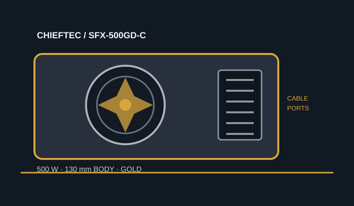

[ POWER CONVERSION // IDENTIFIED MODEL ]
CHIEFTEC SFX-500GD-C
Exact manufacturer model SFX-500GD-C, rated 500 W. Confirm the model code and nameplate against the unit before installation.

HIGH-VOLTAGE SAFETY: Never open or probe a PSU. Hazardous voltage can remain after unplugging. Replace damaged or unidentified units as assemblies or use qualified service.
Verified model specifications
| Model / rated output | CHIEFTEC SFX-500GD-C; 500 W total rated output. |
|---|---|
| Form factor / dimensions | SFX-class enclosure, 130 × 125 × 64 mm (length × width × height). At 130 mm long it exceeds common 100 mm SFX depth; verify the case drawing and cable clearance. |
| DC output rails | +3.3 V: 20 A; +5 V: 20 A; +3.3 V/+5 V combined: 105 W; +12 V: 40 A / 480 W; −12 V: 0.3 A / 3.6 W; +5 VSB: 3 A / 15 W. |
| Efficiency claim | 80 PLUS Gold, as specified by CHIEFTEC for this model. |
| Cable-end connector counts | Fully modular: ATX 20+4-pin ×1; CPU 4+4-pin ×1; PCIe 6+2-pin ×2; SATA ×4; peripheral Molex ×2; floppy ×1. Connector counts refer to cable ends. |
| Revision and cable cautions | Use the exact SFX-500GD-C model designation and its supplied cable kit. Modular PSU-side pinouts are not standardized; never reuse another PSU's cable based on plug fit. |
Compatibility & safe installation
- The 130 mm length is longer than many SFX chassis allowances. Check the case's PSU envelope, mounting holes, airflow path and connector bend clearance before purchase.
- Confirm system load against the 500 W total rating and the 480 W +12 V ceiling; connector shape alone does not establish GPU or motherboard compatibility.
- Use only the cable set supplied with this exact model or replacements explicitly approved for it. Do not splice, repin or adapt modular leads.
- Disconnect mains before external inspection. Do not open or electrically probe the unit.
Manufacturer sources
- CHIEFTEC SFX-500GD-C product pageManufacturer identity, model features and product description.
- CHIEFTEC SFX-500GD-C datasheetManufacturer specifications for rated output, rails, dimensions, efficiency and connectors.